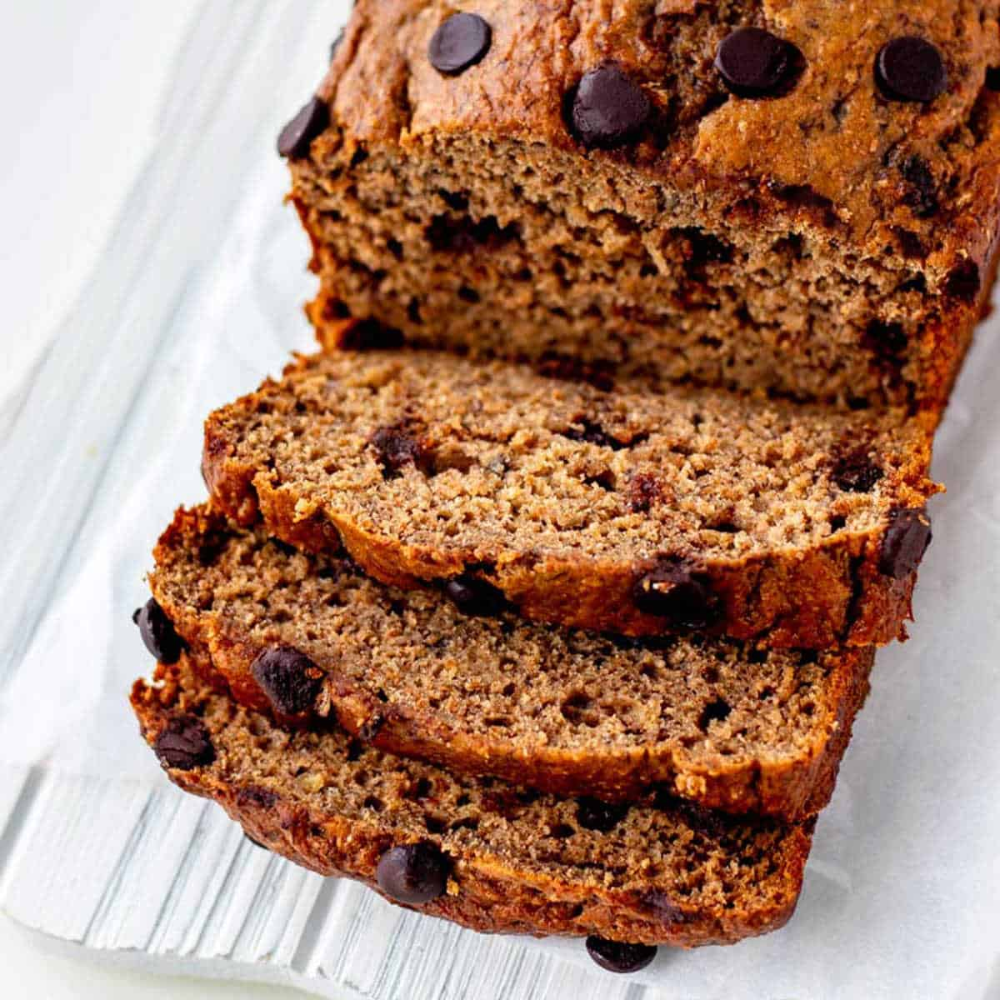

Banana Bread

Bolo de banana bem úmido com gotas de chocolate, ideal para acompanhar um cafézinho!
220 g de banana
1 colher sopa de limão
100 g de manteiga derretida
100 g de açúcar mascavo
1 ovo
1 colher chá de baunilha
145 g de farinha de trigo
35 g de farinha de amêndoas
1 colher chá de fermento
1/4 colher chá de bicarbonato
1/2 colher chá de canela em pó
1/8 colher chá de sal
80 g de chocolate em gotas
Modo de preparo
Pré-aquecer o forno a 175 graus celsius
Amassar as bananas, jogue o limão por cima e reservar
Misturar farinha de trigo + fermento + bicarbonato + canela + sal e reservar
Bater manteiga derretida com açúcar por 2 minutos
Acrescentar ovos, banana e baunilha e bater rapidamente até incorporar
Acrescentar mistura da farinha, incorporando delicadamente com um fouet
Acrescentar farinha de amêndoa e chocolate
Passar a mistura para uma forma untada de 20 cm e assar por 30 min
Voltar para página inicial